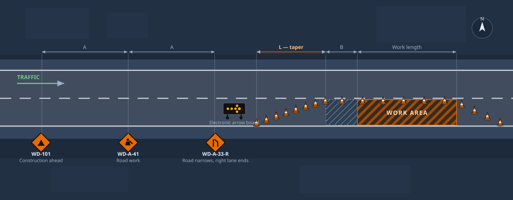
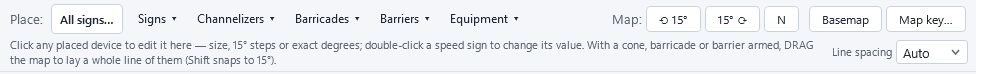

Bid it. Win it. Run it.
Two Windows desktop apps for civil contractors who bid unit-price work. SuperBid builds the estimate from the owner's schedule and prices it to the penny. SuperJob runs the job you won — daily logs, progress billing, and traffic accommodation plans drawn straight onto aerial imagery. Both keep everything in one file on your own machine.
for Windows 10/11 (64-bit)
- Free while in beta
- Works offline
- Your data stays on your machine
- No subscription, no server

The whole bid, one window
SuperBid follows the workflow you already use: schedule in, costs built up, markups applied, proposal out.

Schedule-driven estimating
Import the owner's pay items from Excel or DOT .COL files — or straight from the tender PDF with the optional AI import — and the cost tree builds itself; you add the detail. Six cost methods, nine productivity factor types, crew-hour math, and labor & equipment rate build-ups (including USACE-style equipment costing). Every edit recalculates instantly, spreadsheet-style, and undo survives closing the file.

Pricing that foots to the penny
A full markup chain — indirects, overhead, profit, contingency, bid-day adjustment, and a bond gross-up that keeps the bond an exact percentage of the final price. The spread engine distributes it across pay items with locks, exclusions, rounding bands, and penny-balancing, so the extended total always equals your target. Need to hit a number? "Set bid to $X" solves the adjustment for you.

Quote leveling and awards
Collect vendor quotes side by side, with substitutes filled from the next-best source so you compare complete numbers. Award a quote and the price flows straight into your costs — one undo reverses the whole award. Low bids highlight themselves; per-vendor leveled totals keep everyone honest.

Proposals and reports
A print-ready bid proposal with your terms & conditions, plus bid summary, cost item detail, crew analysis, quote summary, benchmark, and audit trail reports — on screen or as PDF. Export the whole estimate to Excel, write unit prices back into DOT .COL files byte-for-byte, and pull a job-cost budget for accounting.
Parametric assemblies
Pipe trench, flatwork and your own formulas — answer a few inputs and the item tree expands, linked live for re-pricing.
Change orders
Lockable estimate blocks with their own markup. The base bid provably never moves when a CO is added, priced, or rejected.
Estimate Check
A pre-bid wizard runs 14 deterministic checks — unassigned costs, qty gaps, missing bond, locks below cost — with jump-to-fix links.
Trucking & haul
Cycle-time haul calculator with loader-saturation fleet math, so the truck count comes out of the numbers instead of a guess.
Cost history
Capture every bid to a history file and benchmark new work against your own low/avg/high — or against market bid-tab files.
One file per bid
An estimate is a single .sbid file on your disk. Copy it, email it, archive it — no server, no subscription lock-in.
The bid becomes the job.
Award a SuperBid estimate straight into a job file and the budget is already there — every pay item, every cost code, every crew. Or start from a blank job and paste your schedule out of Excel. From there SuperJob tracks what actually happened: hours, quantities, cost against budget, progress invoices, change events — and, for the crews who need it, the traffic accommodation plan that has to be in the permit package before anyone breaks ground.
Daily log
Crew hours at loaded rates, equipment, weather, notes — a few minutes at the end of the day. Yesterday's crew carries forward so you're editing, not retyping.
Quantities & job cost
Weekly quantities against the budget, unit costs that move as the job moves, and a forecast that tells you where you land — not just where you've been.
Progress billing
Ours-versus-agreed quantities, per-invoice holdback, GST net of holdback, and a proper invoice plus progress estimate written fresh from the Alberta prompt-payment rules.
Change events
Notice-deadline warnings before you miss one, T&M tickets at rates frozen the day the work happened, signature-ready on paper. Approve one and it becomes a billable line.
Actuals feed the next bid
Publish a finished job back to your cost history and your next estimate benchmarks against what your own crews really produced.
Same rules as SuperBid
One .sbjob file per job. Fully offline. Undo that survives closing the file. A locked baseline the day-to-day can never quietly rewrite.
Draw the closure. Print the permit package.
Traffic control plans are usually a separate subscription, a separate app, and a separate person who knows how to drive it. In SuperJob it's a tab on the job you're already running — you point at the road on an aerial photo, type the posted speed, and the layout draws itself.

Speed in, layout out
Set the anchor at the upstream edge of the work area, click the direction traffic travels, and enter the posted speed, work length and which side is closed. SuperJob places the advance-warning signs at the sign spacing, the merging taper, the longitudinal buffer, the run of channelizers down the closed lane, the arrow board at the taper head, and a downstream taper that reopens the lane. The taper length comes from the standard metric MUTCD/MUTCDC formula, and the sheet prints the dimensions it used so a reviewer can check the arithmetic.
Then move anything
The generator gets you to about 90%. The pinch point, the driveway that has to stay open, the hydrant — you drag those devices where engineering judgement puts them. Every device takes an exact heading in degrees, four sizes, and a rotation you can type. Undo works across the whole thing, and it still works after you close the file and come back tomorrow.
Drag a line of cones
Arm a cone, drum, delineator, barricade or barrier and drag along the road. A live preview shows the run and tells you how many devices and what spacing before you let go; hold Shift and the line snaps to 15° so it lays dead parallel to the lane. The spacing you pick is a maximum, never a target — the run tightens to fit rather than leaving one wide gap at the end. The whole run drops in a single undo step.

551 real sign faces
Not clip art. The Alberta Traffic Sign Catalogue plus the public-domain Canadian MUTCDC set, searchable by code or description, and drawn on the plan as the actual regulatory face.
Every device on the truck
Cones, drums, delineators, channelizer panels, lane separators, Type I/II/III and A-frame barricades, water and concrete barrier, sand-barrel attenuators, electronic arrow board, message board, portable signals, AFAD, flaggers and TMA.
Aerial imagery
Draw on current satellite imagery of the real road — 15–30 cm across Calgary and Edmonton — or flip to a street base map. Rotate the base map to match the road, and the sheet states the rotation.
Permit-ready plan sheet
One PDF: the plan view, a device schedule a supplier can fill, the dimensions used, your 24-hour site contact, set-up and removal dates and the permit number.
A plan per closure
Stages, detours, a night-work variant — as many plans as the job needs, each remembering its own view. Click one and the map flies to it.
Attached to the job
The plans live in the same .sbjob file as the budget, the daily logs and the billings. No separate subscription, no separate file to lose.
What we won't pretend
The taper length is computed from the published metric MUTCD/MUTCDC formula, which is real traffic-engineering math. The spacing dimensions — how far apart the advance signs go, how long the buffer is, how tight the channelizers sit — ship as sensible defaults interpolated from the ranges the City of Calgary's temporary traffic control manual publishes. They are a starting point, not authenticated regulatory values, and every sheet SuperJob prints says so in as many words. You or your engineer verify the plan against the manual that governs your job before it goes to a permit office. That is true of every tool in this category; we just say it on the drawing.
Try the traffic planner
SuperJob is in beta and free while it is — so is SuperBid. Download it, open the Traffic Plans tab, and draw your next closure.
AI where it helps. You stay in charge.
Connect your own AI provider account (Anthropic or OpenAI) in Setup. Every AI result lands in a review grid first — nothing enters your estimate until you check it, and quantities are flagged by source and confidence.

AI Takeoff
Feed it the drawing set PDF. It reads labelled quantities — never guesses by eye — and flags each row owner-stated, derived, or assumed. Check the rows you trust and import them as forecast quantities.

AI PreBid Analysis
Point it at the tender documents and get a structured read: scope, risks, key dates, addenda flags, and a schedule that joins against your open estimate — exportable to Excel for the go/no-go meeting.

Bid Scraper
Scan a tender board page and triage the results in one grid — scored 0–3 against your work types and region, with status notes that persist between scans. Start an estimate from a listing in one click.
AI features are optional and off until you add a provider key. AI output is a starting point, not an answer — a qualified estimator reviews everything before it goes in a bid.
Free while we're in beta
Both apps are in beta, and both are free for as long as that lasts. No subscription, no server, no account. When they come out of beta, one price covers both — a licence belongs to a computer, not to a login, and every update in your licence year is included.
Right now Beta
Free both apps, every feature
- SuperBid and SuperJob — including the traffic accommodation plan builder
- No credit card, no account, nothing to cancel
- Installing starts a 30-day trial; email once for free beta keys and both keep running
- Your files stay yours — .sbid and .sbjob always reopen
When beta ends
$1,200 CAD / computer / year — both apps
- One price, both apps: estimating and running the job. A key for each, issued against the same machine ID.
- Activation is offline — a signed key, no phoning home
- No auto-billing — renewing is a fresh key by email, on your say-so
- Moving to a new PC? Email for a replacement key
- Already bought SuperBid? Your year gets extended through the beta.
- Download both and use them on real work. Installing starts a 30-day trial.
- Email your machine ID — it's shown under Setup ▸ License key… and is the same in both apps.
- Paste the keys you get back — one per app. Free, and they run to the end of the beta.
Questions contractors ask
What does "beta" actually mean here?
Both apps are in daily use on real work and ship a new build most weeks. Beta means features are still landing fast and your feedback genuinely changes the next release — not that the software is a toy. Both are free while the beta runs. Keep backups of anything you'd hate to redo, the same as you would with any tool this new, and tell us when something's wrong.
It's free now — what happens when the beta ends?
One price covers both apps: $1,200 CAD per computer per year for SuperBid and SuperJob together (they take a key each, issued against the same machine ID). Nothing is auto-billed and nothing switches off without warning — when the beta ends you'll be asked whether you want a licence, and if you don't, your .sbid and .sbjob files are still your files. If you already bought a SuperBid licence, your year is extended through the beta; email sales@superbid.ca.
How do I keep using it past 30 days during the beta?
Installing either app starts a 30-day trial. Email sales@superbid.ca with the machine ID shown under Setup ▸ License key… and you'll get free beta keys for that computer. It costs nothing and there's nothing to cancel — it just means we know who's testing, so we can tell you when something changes.
How is SuperJob's traffic planner different from RapidPlan?
Two honest differences. First, it's not a separate purchase or a separate app — the plan lives in the job file next to the budget, the daily logs and the billings. Second, it's deliberately narrower: SuperJob covers the closure types a civil contractor draws over and over (lane closure, shoulder closure, lane shift, detour), rather than every scenario in the book. If you draw traffic plans all day for a living, a dedicated package will still do more. If you draw them because the permit needs one, this is meant to save you the subscription.
Are the traffic plan dimensions approved for my jurisdiction?
No, and no software's are. The taper length is the standard published metric MUTCD/MUTCDC formula. The sign spacings, buffer and device spacings ship as defaults interpolated from the ranges the City of Calgary's temporary traffic control manual publishes — a starting point you change to suit. Every plan sheet SuperJob prints carries a line telling the reviewer to verify it against the governing manual, and the sheet shows the dimensions used so they can. The plan is yours, and so is the sign-off.
Does the traffic planner need an internet connection?
The aerial base map does — it streams from Esri, and the first time you open the map it also pulls the map library. Everything else about a plan works in a job trailer with no signal: placing devices, editing them, the device schedule, and printing the plan sheet from the last map view you captured. The rest of SuperJob is fully offline.
Where does the sign artwork come from?
The Alberta Traffic Sign Catalogue, published as open data by the Government of Alberta, plus the public-domain Canadian MUTCDC and BC temporary sign sets. They're the real regulatory faces as vector art, not redrawn approximations, and every plan sheet carries the licence attribution the open data licence asks for.
Does it need an internet connection?
SuperBid: no. Estimating, pricing, quotes, and reports are fully offline — job-trailer friendly. On launch the app checks the public release feed for a newer version (nothing about you or your estimates is sent, and downloads only happen when you click the update button). The optional AI tools and tender-board scans use the internet when you run them. SuperJob is the same, except for the traffic-plan base map noted above.
Where is my data stored?
On your disk. Each estimate is a single .sbid file and each job a single .sbjob file (open, self-contained database files); libraries and history are files too. There is no cloud account, and nothing you create is uploaded anywhere — unless you run the optional AI tools, which send only the documents you choose to your own AI provider account.
What happens when the trial ends?
The app asks for a licence key at startup — during the beta that key is free, see above. Your files are untouched, and they open again the moment a key is entered. Nothing is deleted, ever.
What do the AI features cost?
They run on your own AI provider account (Anthropic or OpenAI) using your API key, so you pay the provider directly for what you use — typically cents per document. Without a key, the AI screens simply stay off; everything else works.
What happens when my licence year ends?
The app tells you and asks for a new key — nothing is auto-billed and nothing is deleted. Email sales@superbid.ca, get your renewal key, paste it, and keep working. If you choose not to renew, your files are still your files.
Is it one licence per person or per computer?
Per computer. A key is tied to a specific machine, which is what lets activation work offline with no account and no phoning home. If you work on a desktop and a job-site laptop, that's two licences — or email sales@superbid.ca and ask; we'd rather sort it out than have you fighting the software.
Can I move my licence to a new computer?
Yes — licences are per-computer, so email your new machine ID to support@superbid.ca and you'll get a replacement key.
What does it run on?
Windows 10 or 11, 64-bit. Each app is a single self-contained download — no installer chain, no runtimes to hunt down. Unzip and run.
Can it read my DOT's bid files?
SuperBid round-trips fixed-column .COL proposal files (import the schedule, write your unit prices back into the same file byte-for-byte) and imports pay items from Excel; the optional AI import reads them from tender PDFs. For agencies using AASHTOWare .ebsx, convert to .COL in AASHTOWare first.